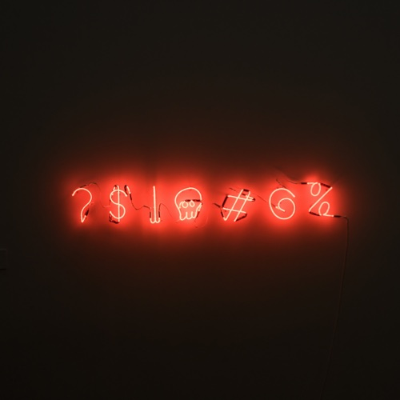
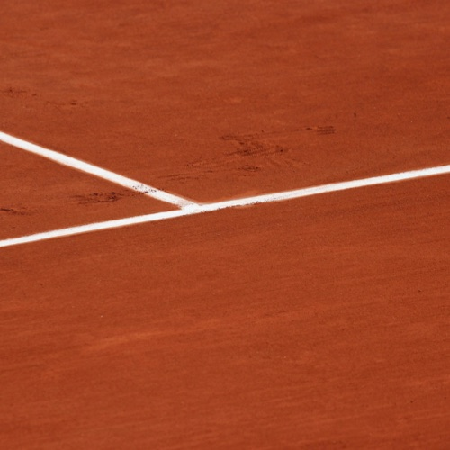
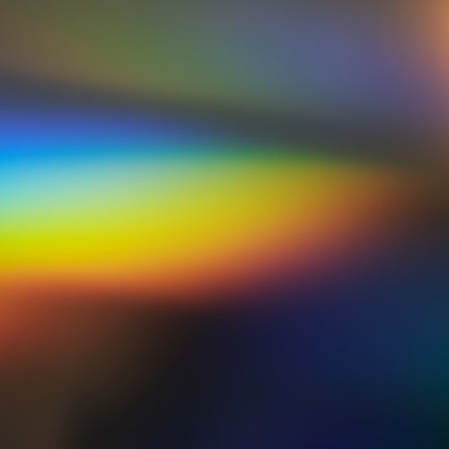

Пустота
Простое правило, которое часто нарушают: ставьте рядом элементы с похожим смыслом и окружайте их пустым пространством. Пустота — мощное средство воздействия.

Сетка
Размеры элементов и расстояния между ними укладываются в гармоничную схему — её называют сеткой. Если элемент выпадает из сетки, что-то не так.
Шрифты
Не больше трёх шрифтов на сайт. Один для заголовков, второй — для всех остальных текстов, третий — для выделения важных слов. И всё.

Цвета
Обычно на сайте два цвета: ведущий и акцентный. Подобрать удачную цветовую пару можно специальными инструментами.